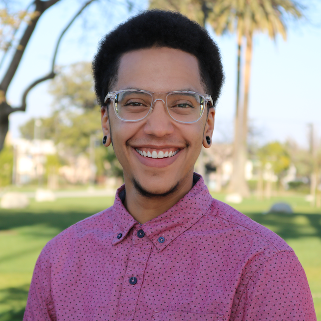
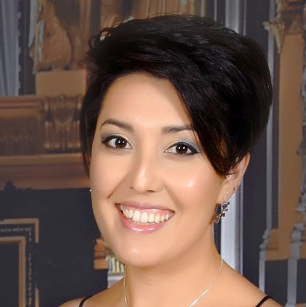
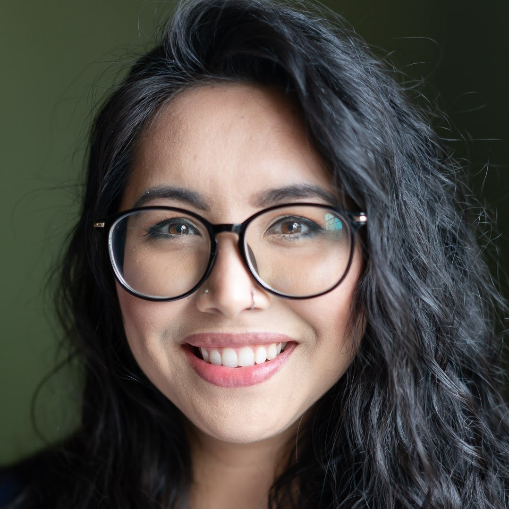
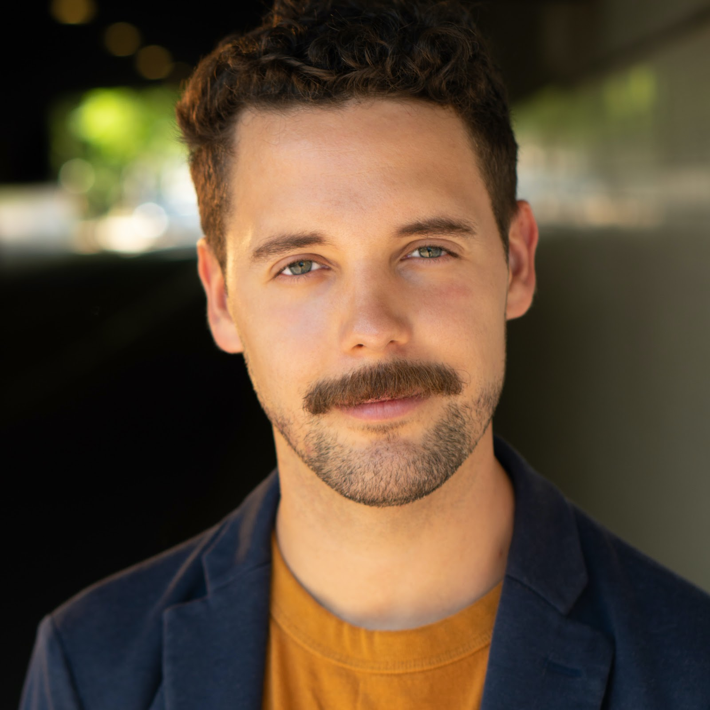

The Team
The Board
Stephanie Solis, President & Founder
Pronouns: She/He/They
Stephanie was born and raised in Lancaster, California and has a bachelor’s degree in Information Systems from the University of California, Riverside. She plays roller derby and can be a bit aggressive at times. But she really just wants equality and justice in the world.
EJ Mason, Vice President & Co-Founder & Member of the Tech Committee
Pronouns: They/Them/Theirs
Leo Yockey, Treasurer & Co-Founder & Member of the Tech Committee
Pronouns: He/Him/His
Leo is a freelance Software Engineer based in Los Angeles. He appreciates the value of opportunity and believes in technology’s ability to make the world better for the whole of humanity, not just a privileged few. While also an avid traveler, Leo is primarily a homebody who spends his free time reading and watching sports. Send him memes.
Aaron Hampton, Secretary & Co-Founder
Pronouns: He/Him/His
Aaron was born at a young age. He lives in a house and works when he can. He’s a nice young man and sensitive, please don’t be too loud around him.
The Committees
Technology Committee
Tim Losee, Director of Technology & Co-Founder
Pronouns: He/Him/His
Emily Solis, Member of the Tech Committee
Pronouns: She/Her/Hers
Emily has volunteered with non-profit organizations since the age of 18. She has made several professional career transitions, finding success as a Licensed Nurse, Instructor of Nursing, Web Technology Consultant, and Sales Director. Today she works full-time as a Network Security Engineer and mentors students and entry-level engineers. Emily lives in Nevada and splits her time between Henderson and Lake Tahoe.
Valerie Solis, Member of the Tech Committee
Pronouns: She/Her/Hers
Valerie is a Cisco certified network engineer based in Columbus, Ohio. She believes the field of tech should be all inclusive and envisions a world where nerds of all kinds work together in harmony to build a better future. Also, she is a Sagittarius sun, Scorpio moon, and Taurus Rising. Her favorite things are traveling, Netflix, and snacks.
Sasha Sashington, Member of the Tech Committee
Pronouns: She/Her/Hers
Sasha is a Network Engineer and a woman of few words.
Public Relations Committee
Corrine Rincon, Director of Public Relations & Co-Founder
Pronouns: She/Her/Hers
Events Committee
- 
Tim Grove, Director of Events & Co-Founder
Pronouns: He/Him/His
Tim has moved over 20 times in his life, but mostly grew up in Riverside, CA and now lives in Los Angeles. He loves cultivating experiences that are inclusive, are “edutaining”, and enact positive change for the community. He also does improv and stuff — he even improvised this whole bio. Book him now!